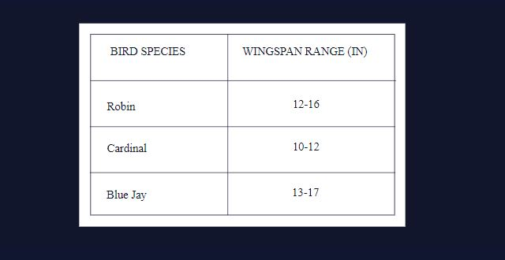
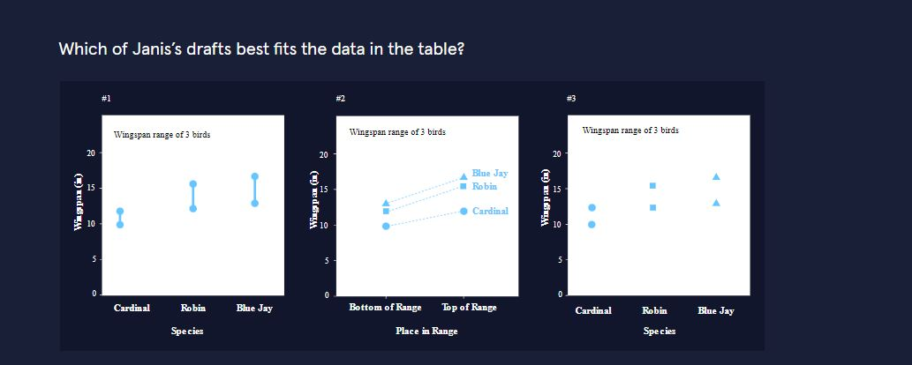
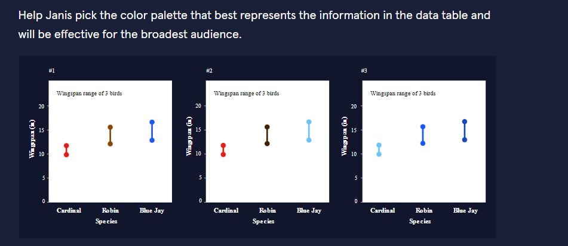
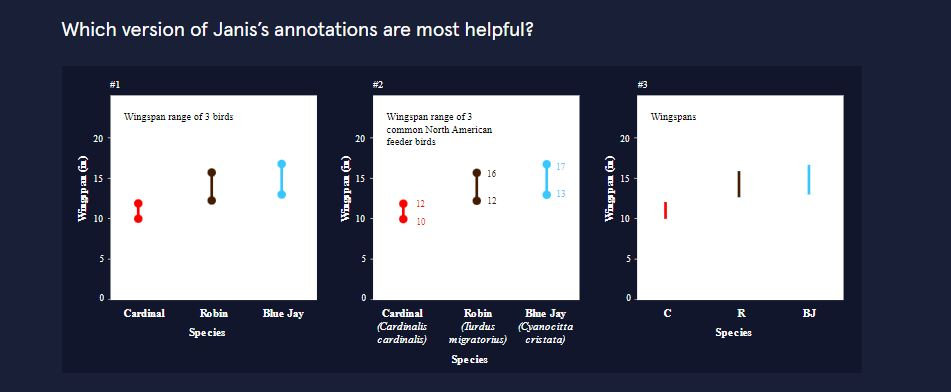
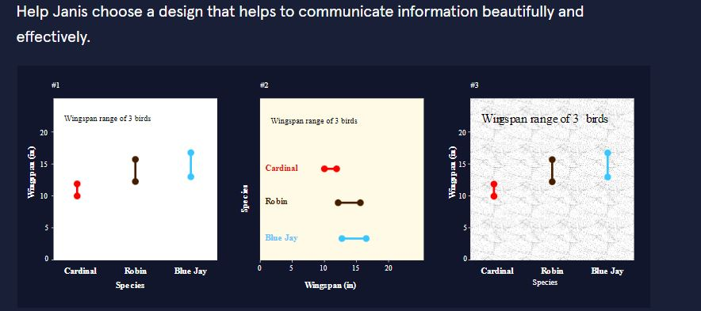

Building Effective Data Visualizations
ou’ve joined Shinji, Paola, and Raj in Dr. Dinkle’s ecology lab! The lab is swamped with its latest project after a successful round of funding (award-winning board game designer Claude Tuber wants to turn the lab’s work into the tabletop role-playing game of a generation). They’re excited to have your data visualization skills!
In a few weeks the lab will present data on birdfeeder birds to the Backyard Birders Association of nearby Dandelion City. One component is a visualization of the wingspans of the three most common backyard birds in Dandelion City: the Northern Cardinal, American Robin, and Blue Jay.
The lab’s paid intern Janis is trying her chops at data visualization, and will be drafting all of the visuals for this presentation. With your knowledge of data visualization, your task is to help her make the most effective visualization of wingspan data to present to the backyard birders of Dandelion City.
Here’s the data we’re working with:

Chart Type
First up… picking the right chart type for our data.

The range chart, option #1. It’s perfect for this kind of data because we’re dealing with, well, ranges! Strong work, Janis.
#2 is the line chart – there’s a very good chance that won’t work simply because we’re not measuring a change over time. And indeed, it doesn’t make sense for this data, and having “Bottom of Range” and “Top of Range” as axis markers is pretty clunky.
Finally, #3 won’t work because we can’t use a scatterplot for categorical data (like species of birds). Scatterplots need to have a continuous, numerical variable on each axis.
Color Palette
Now that we’ve gotten the chart type to align with our data, let’s move on to the next important consideration: color.

Color palette #2. This is a categorical color palette and is colorblind friendly.
Palette #1 is a categorical palette, but when we evaluate the colors based on their values (how dark or light they are), it turns out that these colors will all look very similar in black and white. They’ll also be harder to distinguish for audience members with moderate or severe partial colorblindness.
Palette #3 is colorblind friendly, because its colors are in light, medium, and dark values, but this palette is sequential. Our color choices should reinforce the meaning of our data, and in this case, that means using a categorical palette for categorical data.
Finally, it’s true that this particular chart will be readable basically no matter what palette we choose (in other words, there’s enough information redundancy that we’re not relying on color alone to understand the chart). But it’s also true that good color choices help audiences to understand a chart more efficiently and comprehensively, so it’s worth being thoughtful even when color is a redundant visual cue!
Annotations
With chart type and color palette sorted, let’s look on to annotations that will help our audience make the most of the final chart.

Annotations #1. For our audience, it has the best balance of necessary information and breathing room. Importantly, it tells us that the data shows wingspan ranges, and tells us the common names of the birds shown.
#2 has some extra information that doesn’t improve the data argument of this chart. It’s not relevant, for example, what the Latin names of these common birds are. (It would certainly be relevant for some audiences, but we know we’re presenting to the backyard birders of Dandelion City.) Additionally, the title is wordier than needed. The number labels on the ranges could be left up to the discretion of the chart-maker: they do make the information more readily available, but they clutter the chart and the same goal could be accomplished with horizontal gridlines instead.
Chart #3 is too pared back. The title doesn’t include the key word “ranges” that makes this chart make sense. And the species names aren’t listed out in full anywhere. Finally, removing the end caps from the range lines makes it harder to identify which numbers the ranges correspond to.
Design
And finally, let’s finish up with some design considerations :

Janis did a great job with this one. #1 or #2 will both fly here! Some goals of good design are to let the information breathe, not get in the way of the audience’s understanding, and to create visual balance (which doesn’t necessarily mean symmetry). We’d say #1 and #2 both do this in slightly different ways.
Design #1 doesn’t make any specific changes from the last round, and it doesn’t need to. The chart is on the plainer side, but that’s a great design choice for a lot of data viz. It’s more important to keep the visual consistent and balanced with design choices like even spacing and consistent font style/size than it is to use eye-catching or creative designs. We gotta walk before we fly!
If we don’t feel like walking… Design #2 is a little more designed. A range chart can work vertically or horizontally, and Janis’s horizontal design speaks to the horizontal nature of the thing being measured: a bird’s wingspan. The background color softens the chart overall by very slightly reducing contrast between background and foreground, but it maintains enough contrast to be easily readable. Some viewers might appreciate how off-white looks more intentional than pure white. Finally, the chart is overall a little more colorful since the names of the birds are colored in this version – more colorful can make charts appear more interesting, appealing, and readable, which is nothing to sneeze at.
Design #3 is a miss. Sorry Janis :/ There’s no wrong information here, but this chart incorporates design choices that don’t advance the visual argument and that make the chart harder to read. The background pattern is busy without adding any information. The title font brings the viz up to 3 fonts, which makes the typography look mismatched rather than dynamic. The fonts on the axes also swap between which is used for the axis labels and axis tick labels – this inconsistency is just sloppy design. Finally, the axis labels are also crowding the visualization a little bit – even a millimeter of space on each one would make the visualization look less cramped.